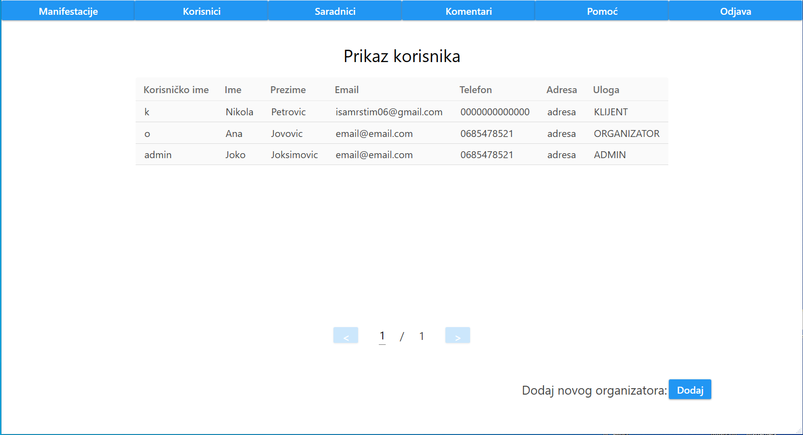
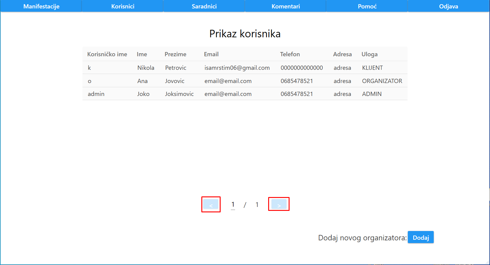
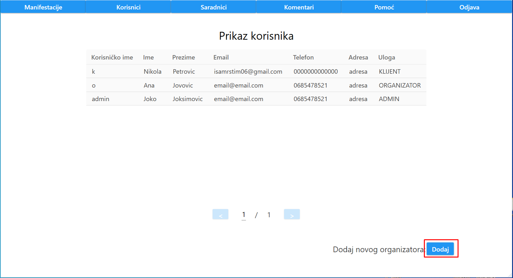

Nakon klika na dugme "Korisnici", adminu se prikazuje lista svih korisnika.
Prikaz korisnika je odrađen tabelarno, gde je za svakog korisnika ispisano njegovo korisničko ime, ime, prezime, email, telefon, adresa i uloga.
Takođe, urađena je paginacija korisnika tako da se na jednoj stranici nalazi najviše 5 korisnika.
Ukoliko admin želi da pređe na narednu ili prethodnu stranicu, to mu je omogućeno klikom na dugme ">", odnosno "<".
Admin može da doda novog organizatora, klikom na dugme "Dodaj" koje se nalazi u donjem desnom uglu.
DETALJNIJE OVDE